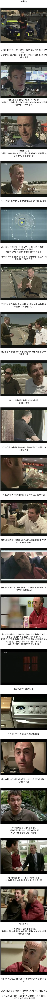

해외가면 시차 줄이는 꿀팁 jpg
댓글
나도 밤낮바꾼다고 저거해봤는데 그냥 먹고잠 청년됨
ㄹㅇ불면증땜에 저렇게해봤는데 불면증 돼지새끼만 됨
ㅋㅋㅋㅋㅋㅋㅋㅋㅋㅋㅋ
그냥 비행기타서 13시간 풀잠때리면 해결되드라
하지만 대부분은 비행기에서 잘못자겠지
난 ㅈㄴ잘자는데 ㅋ
비행기 기내식도 안먹고 13시간 자고 짐찾고 입국심사하고 대충 1-2시간 그리고 이제 숙소가서 짐풀고 밥좀 먹자 하면 얼추 16시간 공복되겠는데? ㅋㅋ 잘하고있군
이거 덕분에 일본가서 인힘들었음
일본 시차적응 힘들던데 대단

시차가 24시간이나 난다던데 대단하네
360도 변화한삶ㄷㄷ
오 일본갈때 어디어디 경유함?
청주한번 부산한번들름
이거 유럽갈때 썼는데 ㄹㅇ 효과있음 시차적응 바로됨
유럽갈때는 시차가 큰문제 안되는데
유럽에서 올때 시차가 문제될걸
ㅇㅇ 돌아올때도 직빵이었음
하지만 기내식이 나오면 먹고싶은걸
자료 만든 놈 왤케 데이빗한테 표독하냨ㅋㅋㅋㅋㅋ
지껄이는 데이빗ㅋㅋㅋ
데이빗의 삶
올리버의 삶
근데 기내식안먹을수도없고 기내식 안먹으면 조사 들어가잖아
뭔 조사??
타서 내릴때까지 아무것도 안먹으면 마약같은거 감싸서 탄거라고 의심한다는 얘기가 있음
그건 그런데 물도 안마셔야될꺼임
물이라도 계속 마시는거 보여줘야겠네
위 속에다가 뭐 숨길 수 있어서
특별한 이유 없이 기내식 안먹으면 용의선상에 오름
그래?
이거보고 교대근무 해봤었는데 암걸림
시차적응은 동쪽으로 갈수록 빡셈. 그래서 유럽가면 그리 어렵지 않은데 미국, 캐나다 가면 디질 것 같음.
올리버의 삶
집중력 깨져서 등장인물 헷갈리길래 대머리를 대이빗으로 기억하니 쉬웠다
기내식을 어케 참음 ㄷㄷㄷㄷㄷㄷㄷ
미국 서너번 왔다갔다 하면서 해봤는데 단 한번도 효과없었음
비행기에서 잠못자고 평소에도 단식 주에 한번 해서 비행하는동안 안먹고 안자는데 아침시간 맞춰 먹어도 아무 효과 없음
시차 안맞으면 열이랑 기침 없는 몸살 느낌
기내식을 어떻게 참아
기내식을 어떻게 안먹어
장기비행에서 기내식 참는게 대단하지
생체시계를 리셋하는거네
항공료 본전 생각에
안먹어본적 거의 없음ㅋㅋㅋ
데이빗을 왜케 싫어함ㅋㅋㅋ
기내식은 그냥맛이없어.. 일등석은 안타봐서모르지만 비즈도맛개같이없어ㅠ
이젠 그냥 다들 멜라토닌 먹고 코코넨네 하던데.
시차적응 다들 어렵나보내
난 존버하면 해결되던데
만약에 베를린 간다치면 8시간 챠이나니까 8시간 안자고있다가 베를린 시간으로 내가 원래 잘시간에 자면 해결됨
인터넷 낭설이 생기는 과정
탈모 진행도도 비중 있는거같은데